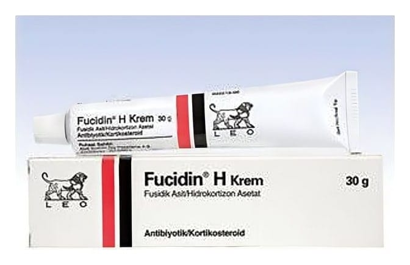

Fucidin H %2 + %1 Krem, 30 g

Ne için kullanılır
KT · Bölüm 1FUCİDİN H 30 g’lık tüp içeren kutularda sunulur.
FUCİDİN H içeriğindeki etkin maddelerden biri (fusidik asit) bakteri kaynaklı enfeksiyonları önleyici ve diğer etkin madde (hidrokortizon asetat) iltihap ve kaşıntı giderici özelliktedir.
FUCİDİN H, enfeksiyonun eşlik ettiği veya enfeksiyon riski taşıyan kontakt dermatit veya atopik dermatit dahil olmak üzere dermatit (genellikle enflamasyon, kızarıklık, kabuklanmış yara ve kaşıntı ile seyreden ve alerjik kaynaklı da olabilen ekzema tipi deri hastalıkları) tedavisinde kullanılır.